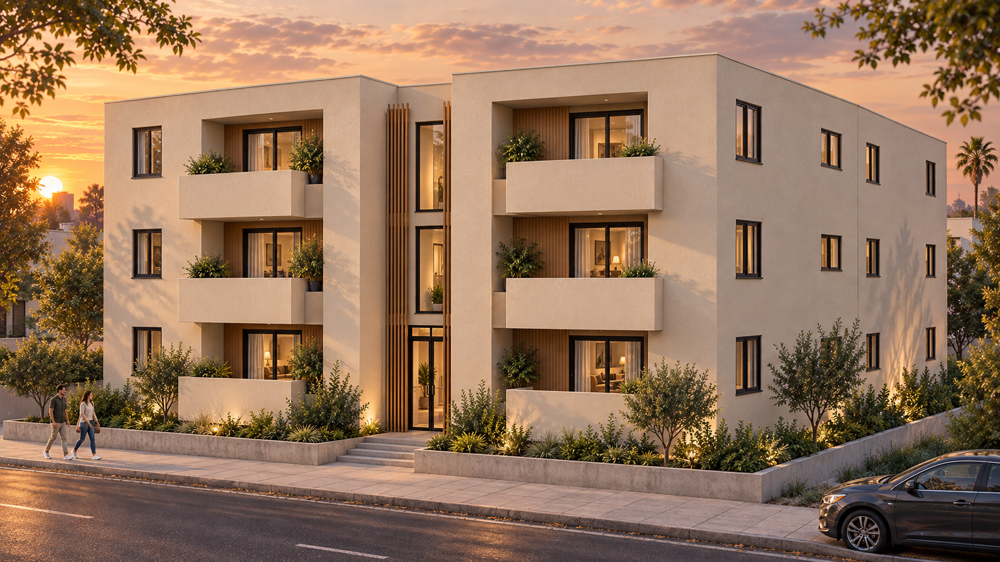
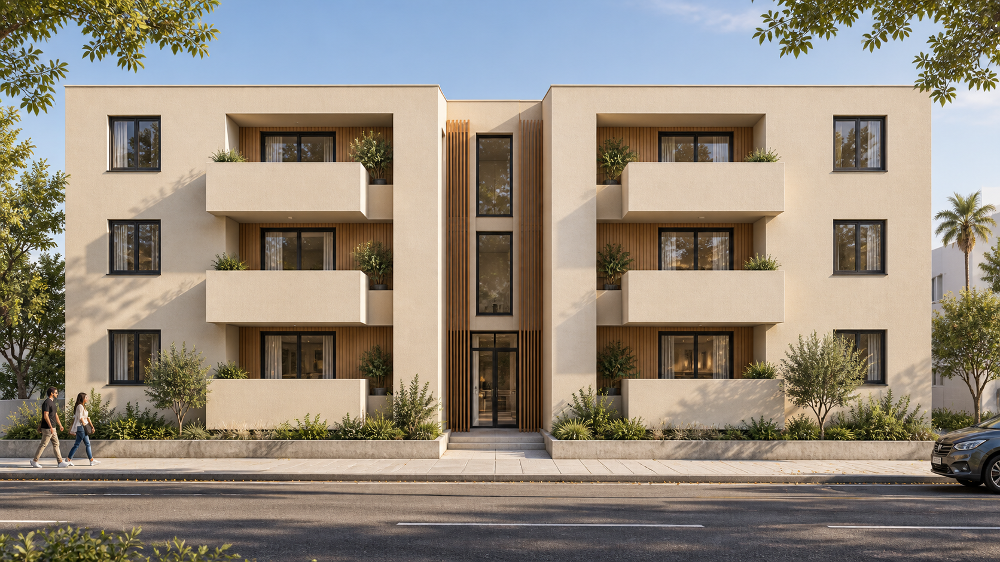
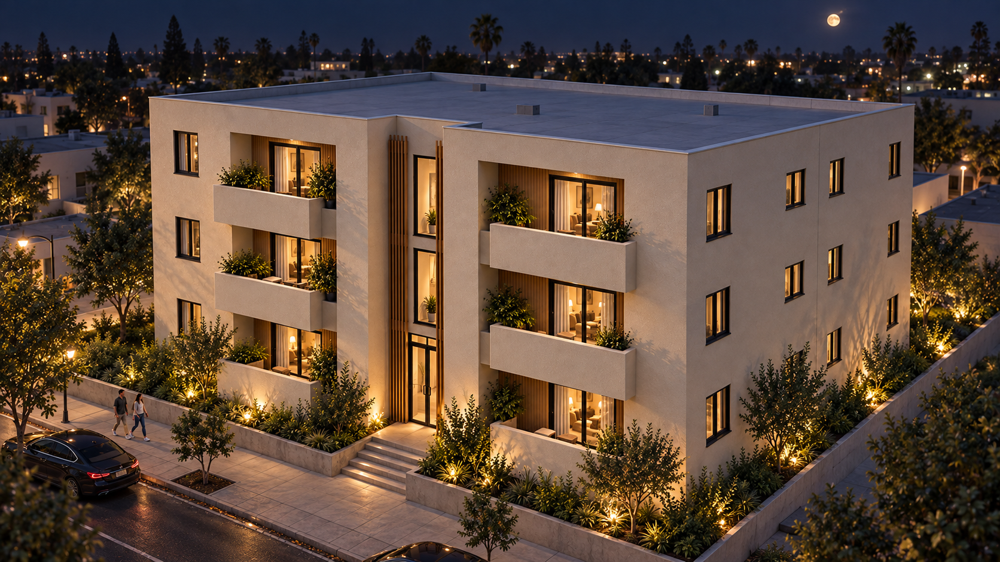

Torres
Santa María
Del proyecto a la realidad.
Avance, prioridades y próximos hitos.
68 % de avance físico
Escenario ilustrativo para exposición
Una arquitectura cálida.
Una ejecución por etapas.
Edificación residencial de escala cercana, con balcones, acceso central y acabados en tonos arena y madera.
Estructura y cerramientos
Consolidar la envolvente del edificio.
Instalaciones y acabados
Coordinar especialidades antes de cerrar superficies.
Base del reporte: cifras, fechas y estados asumidos para fines expositivos. No constituyen un reporte verificado de obra.

68 % ejecutado.
La prioridad es cerrar la brecha.
Logro principal
Estructura concluida en el escenario de trabajo.
Foco inmediato
Instalaciones y albañilería concentran los frentes activos.
Decisión requerida
Liberar materiales y detalles para sostener la secuencia.
Una semana enfocada
en habilitar nuevos frentes.
Periodo asumido: 8–14 de septiembre de 2026.
Albañilería
Tabiques interiores en los niveles 2 y 3.
Canalizaciones
Tendido eléctrico y sanitario en frentes liberados.
Revestimientos base
Tarrajeo interior en ambientes del primer nivel.
Metrados semanales ilustrativos; no equivalen directamente al porcentaje global ponderado.
La estructura sostiene el avance.
Las especialidades marcan el ritmo.
| Partida | Peso | Programado | Ejecutado | Brecha |
|---|---|---|---|---|
| Preliminares y tierras | 10 % | 100 % | 100 % | 0 pp |
| Cimentación y estructura | 35 % | 100 % | 100 % | 0 pp |
| Albañilería | 15 % | 80 % | 70 % | −10 pp |
| Instalaciones | 20 % | 50 % | 47,5 % | −2,5 pp |
| Acabados | 15 % | 30 % | 20 % | −10 pp |
| Obras exteriores | 5 % | 10 % | 0 % | −10 pp |
| Total ponderado | 100 % | 72 % | 68 % | −4 pp |
Avance global = suma del peso de cada partida × su avance. Pesos y porcentajes asumidos.
La brecha baja de 6 a 4 puntos.
Recuperar exige continuidad.
de brecha recuperados desde la semana 15
La producción acumulada pasó de 49 % a 68 % en el escenario. La mejora depende de mantener abastecimiento y frentes disponibles.
Fecha objetivo de término: 16 de noviembre de 2026. Su viabilidad debe validarse con el cronograma detallado.
Recursos alineados
con los frentes prioritarios.
Distribución asumida del personal
12 · Albañilería y revestimientos
8 · Instalaciones eléctricas y sanitarias
8 · Supervisión, seguridad y apoyo
Entregas que deben asegurarse
Septiembre · accesorios sanitarios
Responsable: logística. Habilita pruebas y cierres.
Septiembre · perfiles de carpintería
Responsable: proveedor y logística. Habilita montaje posterior.
Avanzar también significa
verificar antes de cerrar.
Inspecciones de calidad
Controles de alineamiento, instalaciones y preparación de superficies.
Observaciones cerradas
Una observación de alineamiento permanece pendiente. Meta de cierre: 16 de septiembre.
Charlas de seguridad
Orden, trabajo en altura y uso de equipos de protección.
Indicadores asumidos. Los registros de incidentes y ensayos deben incorporarse desde documentación real.
Tres acciones para proteger
la continuidad de la obra.
| Restricción | Acción | Responsable | Fecha límite |
|---|---|---|---|
| Accesorios sanitarios pendientes | Confirmar despacho y recepción | Logística | 17 sep. |
| Detalle de encuentros de fachada | Aprobar solución coordinada | Proyectista / supervisión | 16 sep. |
| Interferencias en el nivel 3 | Validar recorridos en campo | Coordinador de instalaciones | 18 sep. |
Objetivo de respuesta a consultas
Priorizar decisiones que desbloqueen trabajo. Revisar diariamente responsables, fechas y evidencia de cierre.
Meta de la semana 19:
alcanzar el 75 % acumulado.
15–21 de septiembre · incremento objetivo de 7 puntos porcentuales.
Coordinar y liberar
Resolver encuentros y liberar zonas de intervención.
Acelerar cerramientos
Completar tabiques previstos y recibir accesorios.
Verificar instalaciones
Ejecutar controles antes de cerrar superficies.
Medir y reportar
Actualizar metrados y comparar con el objetivo.
La imagen final orienta
las decisiones de acabado.

Fachada
Tonos arena, madera y carpintería oscura para una composición cálida.
Iluminación
Luz cálida en accesos, balcones y circulaciones.
Validación previa
Aprobar muestras, detalles y pruebas antes de ejecutar acabados repetitivos.
La cubierta y los elementos no visibles en la referencia son interpretaciones del render.
El siguiente avance
empieza con decisiones hoy.
Cerrar restricciones, asegurar materiales y verificar calidad para sostener la recuperación.
Autor: Ada Huamaní Li